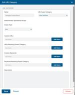
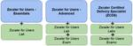
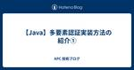
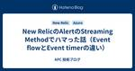

APC 技術ブログ
https://techblog.ap-com.co.jp/
株式会社エーピーコミュニケーションズの技術ブログです。
フィード
【AWS re:Invent 2024】参加レポート 製造業者のAWS活用事例のセッションに参加！生成AIを駆使したダッシュボードの紹介
APC 技術ブログ
はじめに こんにちは！クラウド事業部の升谷です。 re:Inventとラスベガスを満喫して日本に帰ってきております！ 今回は参加したセッションの内容をご紹介します！^^/ セッション内容 製造業者は、機械の複雑なサポート問題に対処するために進化したデジタル技術を活用しています。 CognizantとTrane Technologiesは、新たな製造技術ラボを設立し、機械のパフォーマンスをリアルタイムで監視し、遠隔でトリアージを行い、問題を解決するためのソリューションを実装しました。 このセッションでは、CognizantのAPExがAWS IoTサービス上でどのように大規模な言語モデル、RAG…
4時間前
Datadog Workflow Automation を AI で作ってみた
APC 技術ブログ
目次 目次 はじめに こんな方におすすめ 参考情報 実践① ワークフロー全体像の作成 新規作成画面から AI 利用画面へ AI 利用画面でプロンプトを入力 作成されたワークフローの確認 AI で出来なかったこと 実践② JavaScript のコード作成 おわりに はじめに こんにちは！クラウド事業部の野村です(*ﾟｰﾟ) Datadog には、 Workflow Automation というワークフロー機能があります。 モニターをトリガーにしたり、1日1回などのスケジュールを設定して開始でき、さまざまなクラウドやサードパーティアプリへのアクションも用意されているので、柔軟に利用できそうな機能…
6時間前

【Zscaler】URLフィルタリングでワイルドカードを使用する際の注意点
APC 技術ブログ
目次 はじめに ユーザ定義のルールの作成方法 ワイルドカードを使用する際の注意点 検証 不適切な設定 適切な設定 まとめ はじめに 本記事は Zscaler Advent Calendar 2024 11日目 の投稿です。 こんにちは、エーピーコミュニケーションズ iTOC事業部BzD部0-WANの柳田です。 ZIAにはURLフィルタリングという機能がありインターネットにアクセスする際に特定のカテゴリのURLのアクセスを制限する機能があります。 その中でもURLフィルタリングではユーザ定義のルールを作成することができ、ワイルドカードを使用してURLを指定することができます。 そこで私が誤認識し…
9時間前
【AWS re:Invent 2024】参加してみての振り返り
APC 技術ブログ
目次 目次 はじめに スケジュール概要 役に立ったもの 必須レベル あると快適レベル セッションの見方 会場の移動について 全体を振り返って おわりに はじめに こんにちは、株式会社エーピーコミュニケーションズの松尾です。 今回は、AWS re:Invent 2024の様子をレポートします！初めてのre:Invent、初参加者の視点で役に立つ情報をお伝えしていきます！ 本記事では、参加してみての振り返りをしてみたいと思います。 re:Inventへ参加する際の参考になれば幸いです。 スケジュール概要 re:Invent期間は月曜から金曜ですが、月曜から木曜まで参加し金曜には帰国のため発つスケジ…
13時間前

【Zscaler】Zscaler Certified Delivery Specialist 認定を受けて
APC 技術ブログ
#1 はじめに #2 Zscaler の資格とZscaler Certified Delivery Specialist #3 おわりに #1 はじめに 本記事は Zscaler Advent Calendar 2024 9日目 の投稿です。 こんにちは、エーピーコミュニケーションズ 0-WANの島田です。APCでは、Zscaler社が提供している認定資格の取得を奨励することで、エンジニアたちがベースとなる知識・スキルを揃え、より良いサービスを提供できるように努めております。近頃の社内では、最上級資格の1つである Zscaler Certified Delivery Specialist の認…
1日前
【AWS re:Invent 2024】re:Inventの打ち上げ！re:Playに参加！ 会場・ご飯・アーティストの紹介！
APC 技術ブログ
はじめに こんにちは！クラウド事業部の升谷です。 AWSの最大のイベント、re:Invent 2024がついに、、終わってしまいました。 あっという間に終わってしまったものの、 振り返ると濃くて充実した日々でした！ そんなイベントの締めくくりにはお祭りだ！ と言わんばかりに最終日の re:Play は盛り上がりました！ 今年の re:Play の様子をレポートしていきます！ はじめに re:Playとは？ re:Play への持ち物 いざ Festival Grounds へ！ re:Play スタート！ まずは腹ごしらえ SOUTHAREA と NORTHAREA では体を動かして遊ぼう！ …
1日前
【AWS re:Invent 2024】参加レポート -ライトニングトーク編-
APC 技術ブログ
目次 目次 はじめに セッション情報 セッション・会場の様子 まとめ おわりに はじめに こんにちは、株式会社エーピーコミュニケーションズの松尾です。 今回は、AWS re:Invent 2024の様子を現地からレポートします！初めてのre:Invent、初参加者の視点で役に立つ情報をお伝えしていきます！ 本記事では「 ライトニングトークセッション」にフォーカスしていきます。 re:Inventへ参加する際の参考になれば幸いです。 セッション情報 参加したのは「ライトニングトーク」というタイプのセッションです。20分間の短い時間で行われるプレゼンテーションのようなものです。 私が参加したセッシ…
2日前
【AWS re:Invent 2024】参加レポート -チョークトーク編-
APC 技術ブログ
目次 目次 はじめに セッション情報 セッション・会場の様子 まとめ おわりに はじめに こんにちは、株式会社エーピーコミュニケーションズの松尾です。 今回は、AWS re:Invent 2024の様子を現地からレポートします！初めてのre:Invent、初参加者の視点で役に立つ情報をお伝えしていきます！ 本記事では「チョークトークセッション 」にフォーカスしていきます。 re:Inventへ参加する際の参考になれば幸いです。 セッション情報 今回は参加した2つのセッションを紹介します。チョークトークです。 チョークトーク BIZ209 | Unlock higher email delive…
2日前
【AWS re:Invent 2024】参加レポート -ワークショップ編-
APC 技術ブログ
目次 目次 はじめに セッション概要 セッション・会場の様子 まとめ おわりに はじめに こんにちは、株式会社エーピーコミュニケーションズの松尾です。 今回は、AWS re:Invent 2024の様子を現地からレポートします！初めてのre:Invent、初参加者の視点で役に立つ情報をお伝えしていきます！ 本記事では参加したワークショップセッションにフォーカスしていきます。 re:Inventへ参加する際の参考になれば幸いです。 セッション概要 ワークショップ BIZ205 | Simplify your email with Amazon SES Mail Manager and Amazo…
2日前
【AWS re:Invent 2024】現地で参加してきたDay2の基調講演をレポート（Matt Garman CEOによる基調講演）
APC 技術ブログ
こんにちは、エーピーコミュニケーションズの髙野です。 AWS re:Invent 2024のレポートをお届けします。 今回は現地で参加してきたDay2の基調講演（KEY002）の感想をお伝えします！ 例年、Day2の基調講演では新サービスのリリースなど大きな発表があることが多く、re:Inventの目玉イベントとなっております。 re:Inventの様子を知りたい方、興味がある方はぜひご覧ください。 目次 目次 セッションの概要 セッションの様子 リリース情報まとめ さいごに セッションの概要 セッション名：KEY002 | CEO Keynote with Matt Garman（マット・ガ…
2日前
【AWS re:Invent 2024】参加レポート: The AWS approach to secure generative AI (SEC323) 1
1
APC 技術ブログ
こんにちは、クラウド事業部の山路です。今回はタイトルのセッションを見てきたので、概要と会場の様子を共有します。AWS re:Inventの様子を知りたい方、タイトルにあるセッションに興味がある方はご覧ください。 セッション概要 At AWS, safeguarding the security and confidentiality of customers' workloads is a top priority. AWS Artificial Intelligence (AI) infrastructure and services have built-in security and p…
3日前

Azure Application InsightsでBackstageをmonitorする
APC 技術ブログ
Backstage OpenTelemtry こんにちは。ACS事業部 亀崎です。 みなさんはBackstageにはOpenTelemetryを用いたmonitring機能が利用できることをご存知でしょうか。 backstage.io こちらを導入すれば簡単に以下のような情報を得られるようになります。 Backstageは様々なモジュールを組み合わせて機能します。このため、どこで問題が起きているのか、どこの処理に時間がかかっているのかなどを特定するのに苦労します。OpenTelemetry、特にTracingが可能なことはそうした特定に役立ちます。 今回はBackstage OpenTelem…
4日前

【Java】多要素認証実装方法の紹介①
APC 技術ブログ
はじめに 多要素認証とは 多段階認証と多要素認証の違い 今回実装する多要素認証の実装方式について 開発環境 前提条件 サンプルコードおよび解説 1.多要素認証実施用サーブレットファイル(MfaAuthExample.java) 定数の設定 SECRET_KEY_ALGOTITHM：ワンタイムトークン生成時のアルゴリズム AUTH_CODE：ユーザーに紐づく認証コード(秘密鍵) WINDOW_SIZE：時間windowのサイズ 処理プログラム：doPostメソッド内の記述 ①入力値の取得 ②ワンタイムトークン認証の実行 ③実行結果による表示判定と画面表示(仮実装) 処理プログラム：checkTo…
5日前
【AWS re:Invent 2024】EXPOの様子を現地レポート
APC 技術ブログ
こんにちは、エーピーコミュニケーションズの髙野です。 AWS re:Invent 2024のレポートをお届けします。 今回は「EXPOブースの様子」をご紹介します！ re:Inventの様子を知りたい方、興味がある方はぜひご覧ください。 目次 目次 EXPOとは 開場時間 現地の様子 さいごに EXPOとは EXPOはAWSやAWSのパートナー企業がブースを出展して自社の製品やサービスを紹介している場所です。 各企業、Tシャツやステッカーなどのノベルティを用意しているのでたくさんの企業をまわって、ノベルティを集めるのも、re:Inventならではの楽しみです！！ 詳細はこちらをご覧ください。 …
6日前
【AWS re:Invent 2024】参加レポート: Observability strategies for Amazon EKS workloads (Lightning talk) (KUB323)
APC 技術ブログ
こんにちは、クラウド事業部の山路です。今回はタイトルのセッションを見てきたので、概要と会場の様子を共有します。AWS re:Inventの様子を知りたい方、タイトルにあるセッションに興味がある方はご覧ください。 セッション概要 Containerized applications deployed on Amazon EKS present unique observability challenges. This lightning talk explores effective strategies to gain visibility into your Amazon EKS workl…
6日前

New RelicのAlertのStreaming Methodでハマった話（Event flowとEvent timerの違い）
APC 技術ブログ
こちらは qiita.com qiita.com の6日目です。 Azureを始めとしたクラウドでインフラをTerraformなどを活用しながら構築・運用しているエンジニアですが、今年に入ってからNew Relicに入門しました。 直近はAzure Monitorを使っていて、そちらではKQLというクエリ言語でグラフやアラートを書いていたんですが、 NRQLが大枠ではKQLと近いようなクエリ言語だったので特に違和感なくNew Relicを使い始められました。 APMやSynthetic MonitoringといったNew Relicならではの機能を始め、豊富なメニューから様々な情報が得られてグ…
6日前
【AWS re:Invent 2024】メイン会場 The Venetian の様子をお届け！
APC 技術ブログ
はじめに こんにちは！ クラウド事業部の升谷です。 APCは今年もAWS re:Inventに参加しています！ 12月2日から始まったイベントも後半戦となってきました。 今回は会場の様子をお届けします！ MAP reinvent.awsevents.com 会場がラスベガス中心地にちらばっていることに、私はまず驚きました！！ AWS Summitを始め、日本で開催される大きなイベントは、 1つの展示場の中をぐるぐる歩き回り、1日その中で楽しむパターンが主流だと思います。 一方、AWS re:Invent（アメリカのイベント全般かもしれまでんが）はまずこの価値観を殴りにきます。 複数のコンベンシ…
6日前
Datadog メトリクスモニターでのグループ化とは？マルチアラートとは？
APC 技術ブログ
目次 目次 はじめに こういうところで出てくる言葉、グループ化 マルチアラートを設定したい、、 ダッシュボードにモニターサマリ―ウィジェットを配置したいが、、 グループ化とは、ズバリ まずはメトリクスエクスプローラーでグループ化を追ってみる グループ化を利用したクエリでマルチモニターを設定する マルチアラートモニターにするとなにがよいか モニターサマリ―ウィジェットのタイプは？ おわりに はじめに こんにちは！クラウド事業部の野村です(*ﾟｰﾟ) Datadog のメトリクスモニターを設定していると、 Group という用語が良く出てきます。 公式ドキュメントで明確に説明されたページがなく、「…
6日前
【AWS re:Invent 2024】参加レポート: Data foundation in the age of generative AI (ANT302)
APC 技術ブログ
こんにちは、クラウド事業部の山路です。今回はタイトルのセッションを見てきたので、概要と会場の様子を共有します。AWS re:Inventの様子を知りたい方、タイトルにあるセッションに興味がある方はご覧ください。 セッション概要 An unparalleled level of interest in generative AI is driving organizations of all sizes to rethink their data strategy. While there is a need for data foundation constructs such as data…
6日前
【AWS】Amazon Q Developer に新機能！ユニットテスト自動生成機能、ドキュメント自動生成機能を試してみました
APC 技術ブログ
目次 目次 はじめに Amazon Q Developerとは 試してみた① 試してみた② おわりに お知らせ はじめに こんにちは、クラウド事業部の早房です。 今回は、現在ラスベガスで開催中の AWS re:Invent 2024 で発表された Amazon Q Developer の新機能を一部試してみたので紹介します！ 試す機能は「ユニットテスト自動生成」、「ドキュメント自動生成」です✨ Amazon Q Developerとは 以下の記事でも紹介しました (執筆時はサービス名がCodeWhispererでした) が、IDEなどから利用することでコードの自動生成などが可能な生産性向上ツー…
6日前
【AWS re:Invent 2024】現地の食事の様子を写真でお伝えします
APC 技術ブログ
こんにちは、クラウド事業部の山路です。今回はAWS re:Invent 2024に参加した様子をお届けします。テーマは「現地で食べたもの」です！AWS re:Inventの様子を知りたい方、興味がある方はぜひご覧ください。 ラスベガス アメリカ料理 アメリカと聞いて私がイメージする肉料理、ジャンクフードっぽい料理をいくつか紹介します。 1つ目はホテルのすぐ近くにあったBattista’s Hole in the Wall。 メニューから１品選ぶと、パンとスープorサラダ、食後はカプチーノがついてきました。 このガーリックパンが美味しかったです。 メインの肉料理。Steak CARUSOというの…
6日前
【AWS re:Invent 2024】参加レポート: Elevating the traveler experience: Marriott's digital transformation (MAM230)
APC 技術ブログ
こんにちは、クラウド事業部の山路です。今回はタイトルのセッションを見てきたので、概要と会場の様子を共有します。AWS re:Inventの様子を知りたい方、タイトルにあるセッションに興味がある方はご覧ください。 セッション概要 With $40B+ digital revenue processing on AWS, Marriott's digital transformation enhanced guest experiences and property associates ease of usage, increasing engineering velocity 4 times …
6日前
【AWS re:Invent 2024】Venetian会場からWynn会場までの道のりを現地レポート
APC 技術ブログ
こんにちは、エーピーコミュニケーションズの髙野です。 AWS re:Invent 2024のレポートをお届けします。 今回は「Venetian会場からWynn会場までの道のり」をお伝えします！ re:Inventの様子を知りたい方、興味がある方はぜひご覧ください。 各会場の位置 各会場の位置は以下の地図の通りです。 「2」が目的地のWynnで「3」がVenetianです。 両会場は道を1本挟んでいるものの隣り合っており、徒歩15分ほどで移動できる距離にあります。 Venetianの会場内には以下のようにWynnへの案内表示がいくつか設置されているので、基本的には案内にしたがって歩けば問題なくた…
7日前
【AWS re:Invent 2024】DAY1基調講演を現地からレポート
APC 技術ブログ
目次 目次 はじめに 概要を事前にリサーチ キーノートの様子 主なトピック まとめ おわりに はじめに こんにちは、株式会社エーピーコミュニケーションズの松尾です。 今回は、AWS re:Invent 2024の様子を現地からレポートします！初めてのre:Invent、初参加者の視点で役に立つ情報をお伝えしていきます！ 本記事では「Day1 Keynote（基調講演） 」にフォーカスしていきます。 re:Inventへ参加する際の参考になれば幸いです。 概要を事前にリサーチ reinvent.awsevents.com 内容の原文はこちら。 KEY001 | Monday Night Live…
8日前
【AWS re:Invent 2024】参加レポート: Security insights and innovation from AWS (SEC203-INT)
APC 技術ブログ
こんにちは、クラウド事業部の山路です。今回はタイトルのセッションを見てきたので、概要と会場の様子を共有します。AWS re:Inventの様子を知りたい方、タイトルにあるセッションに興味がある方はご覧ください。 セッション概要 Get insights from AWS CISO Chris Betz on how you can capitalize on transformative security innovations from AWS to move fast and stay secure. Learn how AWS empowers organizations to conf…
8日前
【AWS re:Invent 2024】認定者ラウンジを現地からレポート
APC 技術ブログ
目次 目次 はじめに 認定者ラウンジとは 迷ったら集合場所にも まとめ おわりに はじめに こんにちは、株式会社エーピーコミュニケーションズの松尾です。 今回は、AWS re:Invent 2024の様子を現地からレポートします！初めてのre:Invent、初参加者の視点で役に立つ情報をお伝えしていきます！ 本記事では「認定者ラウンジ 」にフォーカスしていきます。 re:Inventへ参加する際の参考になれば幸いです。 認定者ラウンジとは AWS認定資格の取得者のみが入ることの出来るラウンジです。ドリンクや軽食が用意されています。入場にはパスにチェックを受ける必要があるので事前にチェックを受け…
8日前
【AWS re:Invent 2024】参加レポート: Completing a large-scale migration and modernization (MAM205)
APC 技術ブログ
こんにちは、クラウド事業部の山路です。今回はタイトルのセッションを見てきたので、概要と会場の様子を共有します。AWS re:Inventの様子を知りたい方、タイトルにあるセッションに興味がある方はご覧ください。 セッション概要 This session focuses on valuable lessons from the thousands of enterprises who have migrated and modernized their on-premises workloads with AWS. Dive into the technical lessons that hav…
8日前

【参加レポート】Cisco Live Melborune 2024 ～ GO BEYOND ～
APC 技術ブログ
iTOC事業部 マネージドビジネスソリューション部の武居です。 APCの本社NWインフラの請負部隊とICTセールス&コンサルチームの責任者として、お客様へITインフラ周りの提案を行っております。 簡単にチーム紹介ですが、ICTセールス&コンサルチームは2024年7月から発足し、主に企業の情報システム部門の方々と一緒に伴走しながら、社内にITインフラの導入をするためのご支援をさせていただいております。 まだ発足したばかりのチームですので、社内外からも「遊んでいるのではないのか？」と疑われないように、今回も積極的に発信活動をさせていただきます＾＾ 今回は、11/11～11/14 に開催された Ci…
8日前
【AWS認定資格】AWS Certified Machine Learning Engineer - Associate(MLA-C01) に合格しました
APC 技術ブログ
はじめに こんにちは。クラウド事業部の早房です。 先日 AWS Certified Machine Learning Engineer - Associate(MLA-C01) を受験し、合格しました！ 本記事では、学習に利用した教材や、実際の試験の感想を綴らせていただきます。 本投稿が受験を考えている方々の何かしらの一助となれば幸いです✨ AWS Certified Machine Learning Engineer - Associate(MLA-C01) ついて 2024年10月に正式リリースされた Associate レベルの試験です。 出題範囲は以下です。 • 第 1 分野: 機械学…
9日前
【AWS re:Invent 2024】VenetianからCaesars Forumまでの歩き方
APC 技術ブログ
目次 目次 はじめに VenetianとCaesars Forumの配置 現地の写真 まとめ おわりに はじめに こんにちは、株式会社エーピーコミュニケーションズの松尾です。 今回は、AWS re:Invent 2024の様子を現地からレポートします！初めてのre:Invent、初参加者の視点で役に立つ情報をお伝えしていきます！ 本記事では「VenetianからCaesars Forumへのアクセス」にフォーカスしていきます。 re:Inventの会場へ移動するイメージの参考になれば幸いです。 VenetianとCaesars Forumの配置 メイン会場のVenetianからCaesars …
9日前